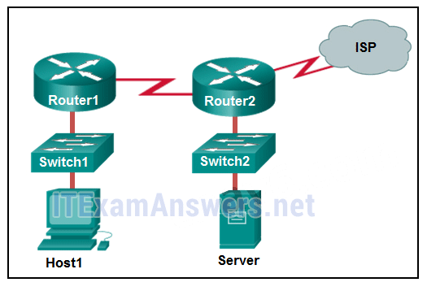
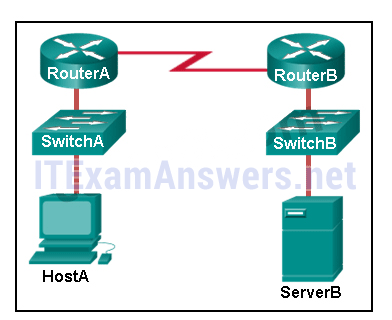
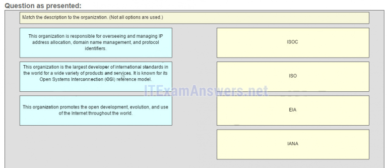
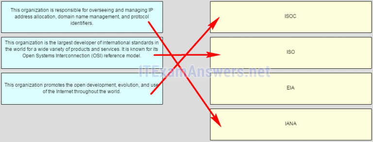
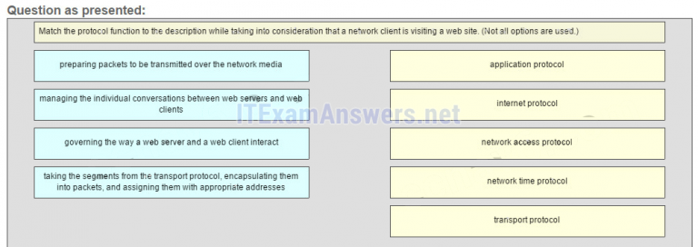
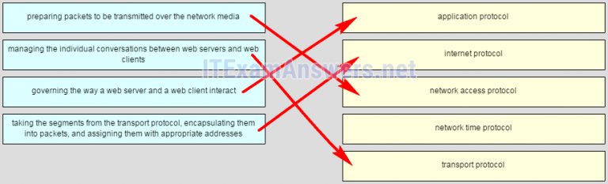
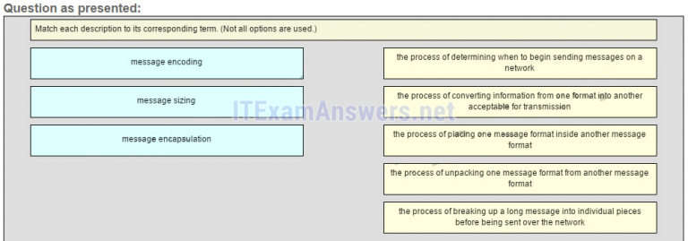
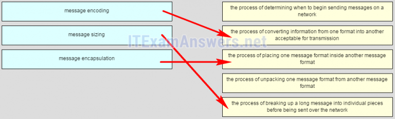

1.¿Qué método pueden usar dos computadoras para garantizar que los paquetes no se eliminen porque se envían demasiados datos demasiado rápido?
- encapsulamiento
- control de flujo *
- método de acceso
- tiempo de espera de respuesta
- @javi__super
Explique:
para que dos computadoras puedan comunicarse de manera efectiva, debe haber un mecanismo que permita que tanto la fuente como el destino establezcan la sincronización de la transmisión y la recepción de datos. El control de flujo permite esto al garantizar que los datos no se envíen demasiado rápido para que se reciban correctamente.
2.¿Qué tipo de comunicación enviará un mensaje a todos los dispositivos en una red de área local?
- multicast
- emisión *
- unicast
- Allcast
- @javi__super
Explique:
la comunicación de difusión es una comunicación de uno a todos. Una comunicación unicast es una comunicación uno a uno. La multidifusión es una comunicación de uno a muchos en la que el mensaje se entrega a un grupo específico de hosts. Allcast no es un término estándar para describir la entrega de mensajes.
3.¿Qué proceso se utiliza para colocar un mensaje dentro de otro mensaje para transferir desde la fuente al destino?
- control de acceso
- encapsulamiento *
- control de flujo
- descodificación
- @javi__super
Explique:
la encapsulación es el proceso de colocar un formato de mensaje en otro formato de mensaje. Un ejemplo es cómo un paquete se coloca en su totalidad en el campo de datos, ya que se encapsula en un marco.
4.Un cliente web está enviando una solicitud de una página web a un servidor web. Desde la perspectiva del cliente, ¿cuál es el orden correcto de la pila de protocolos que se utiliza para preparar la solicitud de transmisión?
- HTTP, IP, TCP, Ethernet
- HTTP, TCP, IP, Ethernet *
- Ethernet, TCP, IP, HTTP
- Ethernet, IP, TCP, HTTP
- @javi__super
Explique:
1. HTTP gobierna la forma en que un servidor web y un cliente interactúan.
2. TCP gestiona conversaciones individuales entre servidores web y clientes.
3. IP es responsable de la entrega a través del mejor camino hacia el destino.
4. Ethernet toma el paquete de IP y lo formatea para su transmisión.
5.¿Qué afirmación es correcta acerca de los protocolos de red?
- Los protocolos de red definen el tipo de hardware que se usa y cómo se monta en los racks.
- Definen cómo se intercambian los mensajes entre la fuente y el destino. *
- Todos ellos funcionan en la capa de acceso a la red de TCP / IP.
- Solo son necesarios para el intercambio de mensajes entre dispositivos en redes remotas.
- @javi__super
Explique:
los
protocolos de red se implementan en hardware, software o ambos. Ellos interactúan entre sí dentro de diferentes capas de una pila de protocolos. Los protocolos no tienen nada que ver con la instalación del equipo de red. Los protocolos de red son necesarios para intercambiar información entre los dispositivos de origen y destino en las redes locales y remotas.
6.¿Qué afirmación es cierta acerca de los modelos TCP / IP y OSI?
- La capa de acceso a la red TCP / IP tiene funciones similares a la capa de red OSI.
- La capa de transporte TCP / IP y la capa 4 de OSI proporcionan servicios y funciones similares. *
- La capa 7 de OSI y la capa de aplicación TCP / IP proporcionan funciones idénticas.
- Las tres primeras capas OSI describen servicios generales que también son proporcionados por la capa de Internet TCP / IP.
- @javi__super
Explique:
la capa de Internet TCP / IP proporciona la misma función que la capa de red OSI. La capa de transporte de los modelos TCP / IP y OSI proporciona la misma función. La capa de aplicación TCP / IP incluye las mismas funciones que las capas OSI 5, 6 y 7.
7.¿Cuál es una ventaja de usar estándares para desarrollar e implementar protocolos?
- Un protocolo particular solo puede ser implementado por un fabricante.
- Los productos de diferentes fabricantes pueden interoperar con éxito. *
- Los diferentes fabricantes tienen la libertad de aplicar diferentes requisitos al implementar un protocolo.
- Los estándares proporcionan flexibilidad para que los fabricantes creen dispositivos que cumplan con requisitos únicos.
- @javi__super
Explique:
Los protocolos basados en estándares permiten que los productos de diferentes fabricantes interactúen con éxito. Los protocolos basados en estándares permiten que muchos fabricantes implementen ese protocolo. Si diferentes fabricantes implementan diferentes requisitos dentro del mismo protocolo, sus productos no serán interoperables.
8.¿Qué tres protocolos de capa de aplicación son parte del conjunto de protocolos TCP / IP? (Elige tres.)
- ARP
- DHCP *
- DNS *
- FTP *
- @javi__super
Explique:
DNS, DHCP y FTP son todos los protocolos de capa de aplicación en el conjunto de protocolos TCP / IP. ARP y PPP son protocolos de capa de acceso a la red, y NAT es un protocolo de capa de Internet en el conjunto de protocolos TCP / IP.
9.¿Qué son los protocolos propietarios?
- Protocolos desarrollados por organizaciones privadas para operar en cualquier proveedor de hardware.
- Protocolos desarrollados por organizaciones que tienen control sobre su definición y operación *
- una colección de protocolos conocidos como el conjunto de protocolos TCP / IP
- Protocolos que pueden ser utilizados libremente por cualquier organización o proveedor.
- @javi__super
Explique:
los
protocolos propietarios tienen su definición y operación controladas por una empresa o proveedor. Algunos de ellos pueden ser utilizados por diferentes organizaciones con el permiso del propietario. El conjunto de protocolos TCP / IP es un estándar abierto, no un protocolo propietario.
10.¿Cuál es una ventaja de los dispositivos de red que utilizan protocolos estándar abiertos?
- Las comunicaciones de red se limitan a las transferencias de datos entre dispositivos del mismo proveedor.
- Un host cliente y un servidor que ejecutan diferentes sistemas operativos pueden intercambiar datos con éxito. *
- El acceso a Internet puede ser controlado por un único ISP en cada mercado.
- La competencia y la innovación se limitan a tipos específicos de productos.
- @javi__super
Explicar:
una ventaja de los dispositivos de red que implementan protocolos estándar abiertos, como los de la suite TCP / IP, es que los clientes y servidores que ejecutan diferentes sistemas operativos pueden comunicarse entre sí. Los protocolos estándar abiertos facilitan la innovación y la competencia entre los proveedores y en todos los mercados, y pueden reducir la aparición de monopolios en los mercados de redes.
11.Consulte la presentación. Si Host1 transfiriera un archivo al servidor, ¿qué capas del modelo TCP / IP se utilizarían?

- Solo aplicaciones y capas de internet.
- Capas de aplicación, transporte, Internet y acceso a la red *
- Sólo las capas de acceso a Internet y la red.
- solo aplicación, transporte, red, enlace de datos y capas físicas
- @javi__super
Explique:
El modelo TCP / IP contiene las capas de aplicación, transporte, Internet y acceso a la red. Una transferencia de archivos utiliza el protocolo de capa de aplicación FTP. Los datos se moverían desde la capa de aplicación a través de todas las capas del modelo y a través de la red al servidor de archivos.
12.¿Qué tres capas del modelo OSI son comparables en función a la capa de aplicación del modelo TCP / IP? (Elige tres.)
- solicitud *
- presentación *
- sesión *
- enlace de datos
- @javi__super
Explique:
el modelo TCP / IP consta de cuatro capas: aplicación, transporte, internet y acceso a la red. El modelo OSI consta de siete capas: aplicación, presentación, sesión, transporte, red, enlace de datos y físico. Las tres capas principales del modelo OSI: aplicación, presentación y mapa de sesión a la capa de aplicación del modelo TCP / IP.
13.¿En qué capa del modelo OSI se encapsularía una dirección lógica?
- capa fisica
- capa de red *
- capa de transporte
- Capa de enlace de datos
- @javi__super
Explique:
Las direcciones lógicas, también conocidas como direcciones IP, están encapsuladas en la capa de red. Las direcciones físicas están encapsuladas en la capa de enlace de datos. Las direcciones de puerto están encapsuladas en la capa de transporte. No se encapsulan direcciones en la capa física.
14.¿En qué capa del modelo OSI se agregaría una dirección lógica durante la encapsulación?
- capa fisica
- capa de red *
- Capa de enlace de datos
- capa de transporte
- @javi__super
Explique:
Las direcciones lógicas, también conocidas como direcciones IP, están encapsuladas en la capa de red. Las direcciones físicas están encapsuladas en la capa de enlace de datos. Las direcciones de puerto están encapsuladas en la capa de transporte. No se encapsulan direcciones en la capa física.
15.¿Qué formato de PDU se usa cuando el NIC de un host recibe los bits del medio de la red?
- expediente
- cuadro *
- paquete
- segmento
- @javi__super
Explicación:
cuando se reciben en la capa física de un host, los bits se formatean en un marco en la capa de enlace de datos. Un paquete es la PDU en la capa de red. Un segmento es la PDU en la capa de transporte. Un archivo es una estructura de datos que se puede usar en la capa de aplicación.
16.¿Qué PDU se procesa cuando una computadora host está desencapsulando un mensaje en la capa de transporte del modelo TCP / IP?
- pedacitos
- segmento *
- cuadro
- paquete
- @javi__super
Explique:
en la capa de transporte, una computadora host desencapsulará un segmento para volver a ensamblar los datos en un formato aceptable por el protocolo de capa de aplicación del modelo TCP / IP.
17.Consulte la presentación. HostA está intentando ponerse en contacto con ServerB. ¿Qué dos afirmaciones describen correctamente el direccionamiento que HostA generará en el proceso? (Escoge dos.)

- Un paquete con la dirección IP de destino de RouterB.
- Un paquete con la dirección IP de destino de ServerB. *
- Un cuadro con la dirección MAC de destino del RouterA. *
- Un paquete con la dirección IP de destino del RouterA.
- @javi__super
Explique:
para enviar datos a ServerB, HostA generará un paquete que contiene la dirección IP del dispositivo de destino en la red remota y un marco que contiene la dirección MAC del dispositivo de la puerta de enlace predeterminada en la red local.
18.¿Qué dirección utiliza una NIC cuando decide aceptar un marco?
- Dirección IP origen
- dirección MAC de destino *
- dirección MAC de origen
- Dirección IP de destino
- @javi__super
19.¿Qué sucederá si la dirección de la puerta de enlace predeterminada está configurada incorrectamente en un host?
- El host no puede comunicarse con otros hosts en la red local.
- El host no puede comunicarse con hosts en otras redes. *
- Un ping desde el host a 127.0.0.1 no tendría éxito.
- El conmutador no reenviará paquetes iniciados por el host.
- @javi__super
Explique:
cuando un host necesita enviar un mensaje a otro host ubicado en la misma red, puede reenviar el mensaje directamente. Sin embargo, cuando un host necesita enviar un mensaje a una red remota, debe usar el enrutador, también conocido como la puerta de enlace predeterminada. Esto se debe a que la dirección del marco de enlace de datos del host de destino remoto no se puede usar directamente. En su lugar, el paquete IP debe enviarse al enrutador (puerta de enlace predeterminada) y el enrutador reenviará el paquete hacia su destino. Por lo tanto, si la puerta de enlace predeterminada está configurada incorrectamente, el host puede comunicarse con otros hosts en la misma red, pero no con hosts en redes remotas.
20.¿Qué característica describe la puerta de enlace predeterminada de una computadora host?
- La dirección física de la interfaz del conmutador conectada a la computadora host.
- la dirección lógica de la interfaz del enrutador en la misma red que la computadora host *
- la dirección física de la interfaz del enrutador en la misma red que la computadora host
- La dirección lógica asignada a la interfaz del conmutador conectada al enrutador.
- @javi__super
Explique:
la puerta de enlace predeterminada es la dirección IP de una interfaz en el enrutador en la misma red que el host de envío.
21.Relaciona la descripción con la organización. (No se utilizan todas las opciones).
- Pregunta

- Respuesta

- @javi__super
22.Haga coincidir la función de protocolo con la descripción teniendo en cuenta que un cliente de red está visitando un sitio web. (No se utilizan todas las opciones).
- Pregunta

- Pregunta

- @javi__super
23.Relaciona cada descripción con su término correspondiente. (No se utilizan todas las opciones).
- Pregunta

- Respuesta

- @javi__super
24.Una computadora en una red dada se está comunicando con un grupo específico de computadoras. ¿Qué tipo de comunicación es esta?
- unicast
- multidifusión *
- emisión
- HTTP
- @javi__super
25.¿Qué protocolo es responsable de controlar el tamaño y la velocidad de los mensajes HTTP intercambiados entre el servidor y el cliente?
- DHCP
- TCP *
- ARP
- HTTP
- @javi__super
26.Un usuario está viendo un documento HTML ubicado en un servidor web. ¿Qué protocolo segmenta los mensajes y administra los segmentos en la conversación individual entre el servidor web y el cliente web?
- DHCP
- TCP *
- HTTP
- ARP
- @javi__super
27.¿Qué estándar IEEE permite que una NIC inalámbrica se conecte a un AP inalámbrico fabricado por un fabricante diferente?
- 802.1
- 802.11 *
- 802.3
- 802.2
- @javi__super
28.¿Qué es una función de la Capa 4 del modelo OSI?
- para especificar el tipo de paquete a ser utilizado por las comunicaciones
- para describir la entrega ordenada y confiable de datos entre la fuente y el destino *
- para aplicar información de encuadre al paquete, según los medios adjuntos
- para representar datos al usuario, incluida la codificación y el control del diálogo
- @javi__super
29.¿Cuál es el beneficio de usar un modelo en capas para las comunicaciones de red?
- Mejora del rendimiento de transmisión de la red mediante la definición de objetivos para cada capa
- fomentando la competencia entre los proveedores de dispositivos y software mediante el cumplimiento de la compatibilidad de sus productos *
- evitar posibles problemas de incompatibilidad mediante el uso de un conjunto común de herramientas de desarrollo
- simplificando el desarrollo de protocolos limitando cada capa a una función
- @javi__super
30.¿Qué declaración describe con precisión un proceso de encapsulación TCP / IP cuando una PC está enviando datos a la red?
- Los datos se envían desde la capa de Internet a la capa de acceso a la red.
- Los segmentos se envían desde la capa de transporte a la capa de Internet. *
- Los marcos se envían desde la capa de acceso a la red a la capa de Internet.
- Los paquetes se envían desde la capa de acceso a la red a la capa de transporte.
- @javi__super